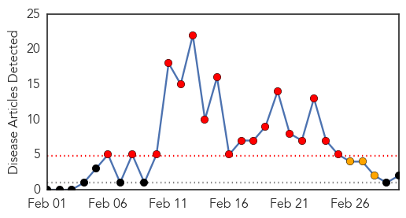
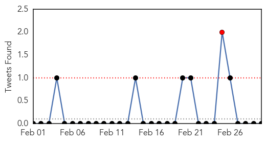
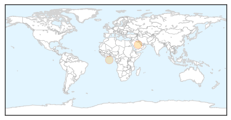

MERS
30-Day Web Trend
18 alerts, 3 warnings

30-Day Twitter Trend
1 alerts, 0 warnings

Article Locations
Article Confidences

Top Articles:
Top Tweets:
- 0.676
- AFD blog `Saudi MOH Reports 4 MERS Cases, 4 Recent Fatalities' MERS-CoV http://t.co/U5IDmejl8U
Hepatitis
30-Day Web Trend
9 alerts, 5 warnings

30-Day Twitter Trend
0 alerts, 0 warnings

Article Locations

Article Confidences

Top Articles:
Top Tweets:
-
No tweets found for Mar 02, 2015